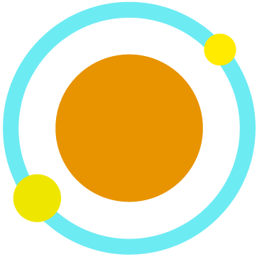

 Stone App
Apps
We proudly present to you.
Web Editor
線上即時編輯、預覽網頁。
即時編輯
- 簡單一按即可預覽畫面
分頁
- 將 HTML、CSS、JavaScript 分開編輯
GitHub
Launch App
Cavern
簡易、輕量級的部落格系統。
與用戶互動
- 有按讚、留言功能，甚至還有通知!
Markdown 寫作
- 簡易語法，輕鬆上手
自適應式設計
- 不論裝置螢幕大小，都有良好使用體驗
GitHub
EPUB 簡轉繁
線上將 EPUB 中的簡體轉換為繁體。
簡體轉繁體
- 一鍵即可將 EPUB 中的簡體全部轉成繁體
即時轉換
- 上傳後立刻開始轉換
GitHub
Launch App
Simple Pad
只是個文字框。
Stack Visualiser
線上的 Stack！
更多程式開發中
敬請期待